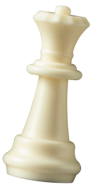
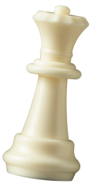

ПРЕВРАТИТЕ УЕЗДНЫЙ ГОРОД
В СТОЛИЦУ
ЗЕМНОГО ШАРА
Оплатите взнос на телеграммы для организации Международного васюкинского турнира по шахматам
Оплатите взнос на телеграммы для организации Международного васюкинского турнира по шахматам
 



| Место проведения: | Клуб «Картонажник» |
| Дата и время мероприятия: | 22 июня 1927 г. в 18:00 |
| Стоимость входных билетов: | 20 коп. |
| Плата за игру: | 50 коп. |
| Взнос на телеграммы: |